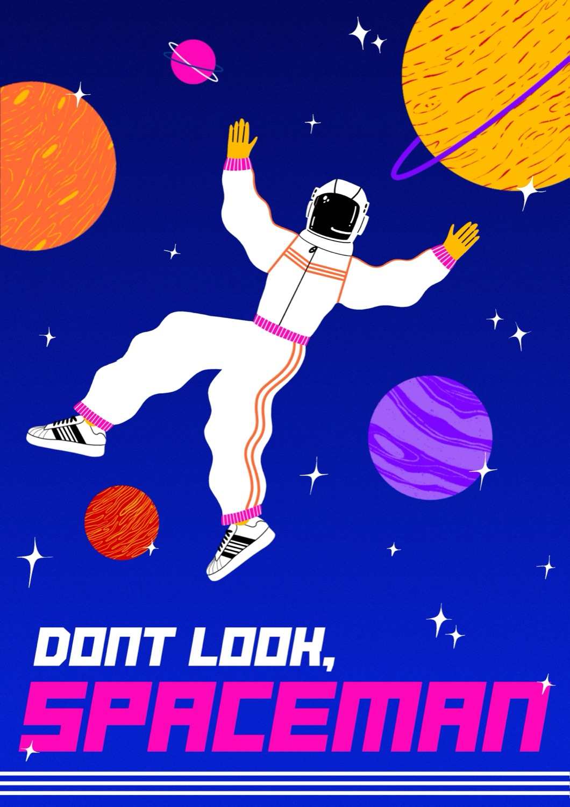

Don't Look, Spaceman
Spaceman struggles. Sometimes he is floating, sometimes he is crashing. He scrambles backwards. He has something irritating him. He pulls the shard of a mirror ball from his skin.




Don't Look, Spaceman is an intergalactic dance-in-space made with, and for, young audiences aged 10+. Our hero is a queer Spaceman desperate to find the "final frontier" and a new place to call home. Drifting ever closer to a looming black hole, they are locked inside their malevolent spaceship "VENTON" as hope of a life beyond the "pale blue dot" of earth is beginning to fade. That is, until he begins his venture into deepest space…
Drawing on my experience as a young queer, working class person, Don't Look, Spaceman uses humour and pathos to explore themes of class, self-esteem, resilience and belonging, and questions the patriarchal constraints placed on young people just when they are trying to find their place in the world. Don't Look, Spaceman has been made with, and for young audiences through a series of workshops with young people in Primary and Secondary Schools.
Don't Look, Spaceman was developed through Imaginate's Launchpad bursary scheme in 2023 with development periods with young people in Tynecastle High School, Corstorphine Primary School and Beath High School.
Dan has written about his development of the work as part of a collection by Yvette Taylor called Queer in a Wee Place: Small Nations, Sexuality and Scotland published by Bloomsbury, where he unpacks the dialogic nature of his practice and the topic of queerness in classroom settings. You can find more information here.
Creative Team
- Dan Brown — Choreographer & Performer
- Lu Kemp — Director
- Alison Brown — Costume Designer
- Emma Lewis-Jones — Choreographer/Dance Dramaturg
- Kate Bonney — Lighting Designer
- Ben Fletcher — Sound Designer
- Jamie Wardrop — Video Designer
- Tanya McLaughlin — Producer
- Isy Sharman — Producing Support
- Holly Wright — Stage Manager
- Jenny Booth — Set Designer
- Sally Charlton — Workshop Facilitator
Images by Tommy Ga-Ken Wan
Poster Design by Thomas McKay